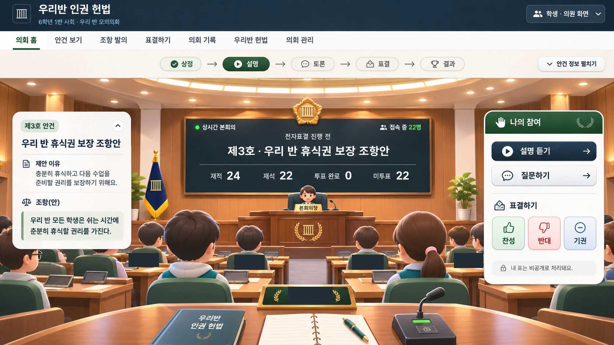
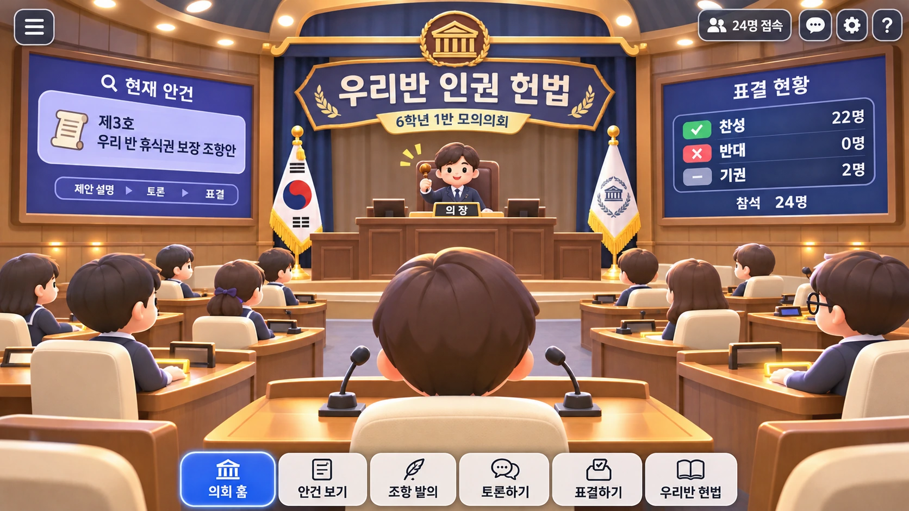
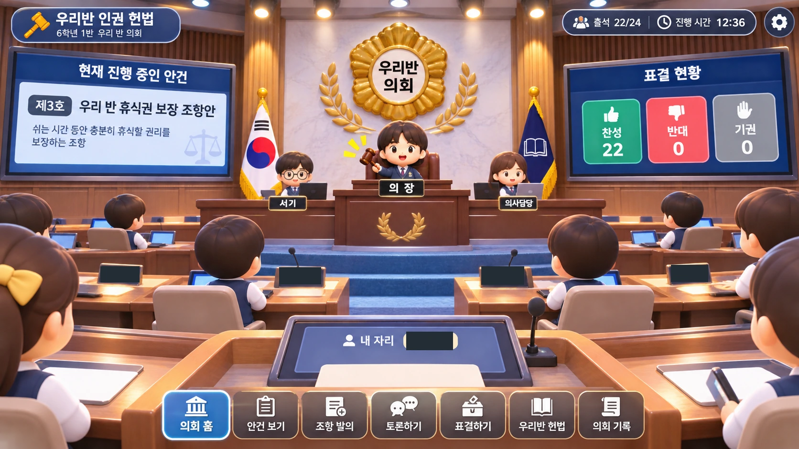

헌법과 학급 규칙의 차이
지켜야 할 생활 규칙을 정하는 데 그치지 않고, 공동체 구성원의 자유와 권리를 보장하는 기본 원칙을 만든다는 점을 수업 도입에서 분명히 안내하면 좋겠습니다. 교칙·학급 규칙과 헌법의 역할을 비교해 보면 학생들이 조항 제정의 의미를 이해하는 데 도움이 됩니다.
박성준 선생님께 · 수업 설계의 교육적 강점을 살리고, 실제 교실에서 함께 작동하는 모의의회로 발전시키기 위한 제안입니다.
성준 선생님, 1차와 2차 보고서를 확인해 보았습니다!
1차에서 구상하신 학급 헌법 만들기 활동이 2차에서는 가상 학급 상황과 학생 역할을 바탕으로 기본권 침해 사례를 예상하고, 관련 조항을 제정하는 방향으로 발전한 점이 좋았습니다. 사회과뿐 아니라 국어과 토의 성취기준을 연계한 점도 인상적입니다.
다음 단계에서는 멋진 의회 화면뿐 아니라 학생이 직접 생각하고 의견을 조정하여 공동의 결정을 만드는 학습 과정을 더 선명하게 드러내면 좋겠습니다.
지켜야 할 생활 규칙을 정하는 데 그치지 않고, 공동체 구성원의 자유와 권리를 보장하는 기본 원칙을 만든다는 점을 수업 도입에서 분명히 안내하면 좋겠습니다. 교칙·학급 규칙과 헌법의 역할을 비교해 보면 학생들이 조항 제정의 의미를 이해하는 데 도움이 됩니다.
학생들이 의견을 내고 조항을 결정하는 주체라는 점을 수업자 의도에 명시하면 좋겠습니다. AI는 문장 점검·용어 안내·의회 진행을 돕되, 학생의 의견을 대신 작성하거나 의사결정을 대신하지 않도록 역할을 제한합니다.
사회와 국어 통합 수업의 장점을 살리려면 발의와 전자표결 사이에 근거를 든 의견 나누기, 다른 의견 듣기, 조항 수정과 재논의 단계를 넣는 것이 중요합니다. 4차시 구성안을 예시로 살펴보되 학급 상황에 맞게 조정하세요.
완성된 조항만 보지 않고 기본권 이해, 의견과 근거 제시, 상대 존중, 의견 조정과 합의 참여를 관찰 가능한 기준으로 평가해 보세요. 조항이 가결되지 않더라도 학습 성과를 확인할 수 있어야 합니다.
여러 기기에서 서로 다른 학생으로 접속했을 때 입장·착석·발의·토론·투표·저장이 정상 작동하는지 확인해야 합니다. 학생 화면은 전체 회의장 조감도보다 자기 자리에 앉아 의장석을 바라보는 1인칭 시점으로 전환하고, 설명은 접기·펼치기와 짧은 행동 버튼 중심으로 단순화하면 좋겠습니다.
학생들이 기본권·발의·가결·기권처럼 낯선 말을 쉽게 이해하도록 용어 풀이 기능을 넣으면 좋겠습니다. AI 도움말을 도입한다면 짧은 설명과 예시를 중심으로 하고, 법률적 판단이나 학생 의견을 대신하지 않도록 합니다.
4차시 구성 예시 · 성준 선생님의 수업 의도에 맞게 조정할 수 있습니다.
국회 역할을 학습한 뒤 가상의 의원이 되어 예산안을 검토하고, 모둠별 토의를 거쳐 수정 결과를 발표하는 구성입니다. 활용 포인트: 제안 → 근거 제시 → 조정 → 발표의 순서.
법과 시행령을 비교하고 역할에 따라 주장과 근거를 정리하며 판단하는 구성입니다. 평가에서는 근거 제시와 상대 입장 존중을 살핍니다. 활용 포인트: 역할 몰입, 근거 중심 평가.
첨부된 참고 지도안은 서로 다른 수업 주제의 예시입니다. 박성준 선생님의 헌법 제정 수업안에 그대로 붙여넣지 않고 수업 구조와 평가 방법을 참고하기 위한 자료입니다.
모의 행정재판 예시에는 주장의 근거를 제시하는 과정·기능 평가와 상대 입장을 존중하는 가치·태도 평가가 나타납니다. 이를 그대로 옮기기보다는 헌법 제정 수업에 맞춰 '기본권 이해 / 이유 설명 / 의견 조정 / 타인 존중' 등의 관찰 문장으로 바꾸어 적용하면 좋겠습니다.
첨부된 정교화 참고 이미지 ZIP에서 가져온 주요 이미지입니다. 아래 이미지는 시각적 참고 자료이며, 실제 PNG 파일은 별도로 GPT Work에 첨부해야 편집과 구현에 활용하기 좋습니다.



아래 버튼을 누르면 프롬프트 전체가 복사됩니다. 기존 앱과 데이터를 안전하게 보존하도록 한 후 실제 코드 수정과 테스트를 요청하는 내용입니다.
현재 제작된 「우리반 인권 헌법」 웹앱을 실제 초등학교 6학년 수업에 활용할 수 있도록 정교화해 주세요. 기존 프로그램의 장점과 기능을 유지하되, 시각적 시안에 그치지 말고 가능한 범위에서 실제 코드를 수정하고 검증해 주세요. 현재 데이터(학급·학생·발의 안건·기록·헌법 조항)는 수정 전 백업하고 삭제하거나 초기화하지 마세요. [1. 수업의 본질과 AI 역할] 학생들이 자신과 공동체의 권리를 보호하는 기본 원칙을 직접 고민하고, 직접 문장을 만들고, 토의하여 합의하도록 설계해 주세요. AI는 어려운 용어 설명과 문장 표현 점검, 의회 진행을 돕는 도구이며 조항 내용과 학생 의견을 대신 결정하지 않습니다. 사회과 기본권 이해와 국어과 의견 비교·조정 성취기준이 실제 활동에 드러나도록 해 주세요. [2. 학생용 1인칭 의회 화면] 현재 전체 회의장을 내려다보는 시점을 학생이 자신의 좌석에 앉아 전방 의장석과 전광판을 바라보는 시점으로 개선해 주세요. 학생 책상·명패·주변 친구 아바타와 전방 의장석을 자연스러운 원근감으로 배치하고, 교사는 필요할 때 전체 조감도를 볼 수 있게 해 주세요. 상단 설명문과 긴 패널은 최소화하며 '안건 자세히 보기'로 접어 두었다가 펼칠 수 있게 해 주세요. 주된 행동은 큰 버튼 하나로 강조합니다. 단계 표시: 상정 → 설명 → 토론 → 표결 → 결과. PC·태블릿·저사양 기기에서도 사용 가능하도록 구성합니다. [3. 실제 의회 기능] 학생 입장 및 지정 좌석 착석, 학생별 아바타/출석 상태, 조항 제목·제안 이유·본문 입력, 공동 발의자 선택, 제안 설명, 질의·토론과 발언 신청, 교사 발언 순서 관리, 토의 뒤 조항 수정 이력, 교사가 개시/마감하는 찬성·반대·기권 전자표결, 결과 저장 및 우리반 헌법 반영 기능을 연결해 주세요. 가결/부결은 교사가 정한 명확한 기준에 따라 표시해야 합니다. 학생별 중복 투표와 무단 교사 기능 사용을 방지하고, 표결 마감 전 개인 선택은 비공개로 보호해 주세요. [4. 실시간 다중 접속과 메타버스 요소] 한 기기에서 보이는 로컬 시뮬레이션이 아니라 서로 다른 기기들이 같은 학급·회의 상태를 공유하도록 서버 기반 동기화(WebSocket 등 적절한 기술)를 구현해 주세요. 입장·퇴장·착석·손들기·발언·투표 완료 상태가 다른 학생과 교사 화면에 반영되어야 합니다. 새로고침·일시 연결 끊김·재접속 시 좌석과 투표 상태가 일관되게 복구되도록 해 주세요. 우선 고정 좌석과 간단한 이동/손들기 애니메이션을 안정화하고, 자유 이동형 3D는 후속 확장으로 분리합니다. [5. 첨부 PNG와 이후 3D 전환] 함께 첨부한 본회의장 시안과 남녀 학생 아바타, 학생 책상·의자, 의장석, 전광판 이미지 파일을 실제 에셋으로 활용해 주세요. 배경·가구·캐릭터·인터페이스를 독립 계층으로 관리하고, 이름·안건명·투표 수치처럼 변하는 정보는 PNG에 고정하지 말고 웹앱 코드로 실시간 표시해 주세요. 이미지 기반 2.5D를 우선 구현하되 추후 GLB 모델을 넣을 수 있도록 아바타·좌석·의장석을 교체 가능한 구조로 정리해 주세요. [6. 기능 테스트 및 보고] 교사 1명과 서로 다른 학생 최소 3명의 독립 브라우저 세션으로 입장 → 발의 → 제안 설명 → 질의·토론 → 조항 수정 → 표결 → 결과 저장을 끝까지 검증하세요. 가능하다면 서로 다른 실제 기기에서도 점검하고, 불가능하면 시뮬레이션 테스트와 실기기 테스트 미실시를 명확하게 구분하세요. 중복 투표, 동기화, 재접속, 학생/교사 권한 분리, 기록 내보내기, 기존 데이터 보존, 태블릿 반응형 화면을 확인하고, 확인하지 않은 사항을 '완료'라고 표현하지 마세요. [7. 완료 후 제공할 내용] (1) 개선된 실제 웹앱과 화면 (2) 학생/교사용 이용 흐름 (3) 적용한 이미지 소스와 추후 3D 모델 전환 목록 (4) 테스트 조건·성공/실패·남은 문제의 표 (5) 배포 여부와 확인된 URL을 정리해 주세요. 구현 우선순위는 실제 다중 참여와 상태 동기화 → 발의·토의·수정·표결 → 학생 1인칭 화면 → 부가 애니메이션입니다. 기존 운영 버전은 안전하게 보존하세요.
① GPT Work에서 현재 웹앱 프로젝트를 엽니다. ② 위 프롬프트를 복사해 붙여넣습니다. ③ 정교화 참고 이미지 ZIP의 PNG들을 함께 첨부합니다. ④ 구현 결과에서 교사 1명·학생 여러 명의 접속과 실제 데이터 저장 여부를 확인합니다. ⑤ 검증된 변경만 배포합니다.
이 체크 항목은 검증 결과가 아닌 수업 전 확인용 목록입니다. 체크 여부는 브라우저마다 별도로 유지되지 않습니다.
AI를 활용하여 여러 차례 화면을 수정하고 본인의 수업 의도에 맞게 정교화한 과정이 잘 드러납니다. 앞으로는 각 기능이 학생의 어떤 학습 경험에 기여하는지 조금 더 고민해 보시면 더욱 완성도 높은 수업이 될 것 같습니다. 수고 많으셨습니다!